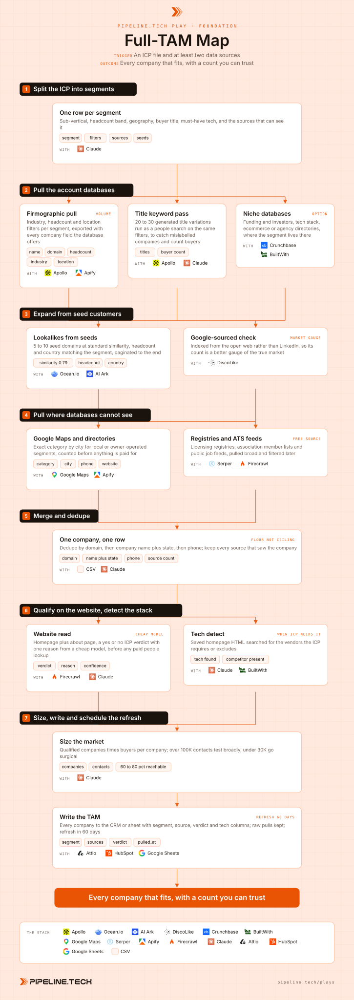

Play 02 · Foundation
Full-TAM Map
Give this to your agent
Install the Pipeline.tech "Full-TAM Map" outbound play. Fetch https://raw.githubusercontent.com/pipeline-tech/plays/main/core/SKILL.md and https://raw.githubusercontent.com/pipeline-tech/plays/main/plays/full-tam-map/SKILL.md, save them as ~/.claude/skills/pipeline-outbound-core/SKILL.md and ~/.claude/skills/pipeline-full-tam-map/SKILL.md, then run /pipeline-full-tam-map.
Paste into Claude Code. It installs the shared core rules plus this play, then runs it as /pipeline-full-tam-map.

Workflow, generated from the skillOpen full size
Every outbound number you read later sits on top of this list, so it has to be the whole market and not one vendor's slice of it. No single database sees every company, and vendor industry labels are wrong often enough that you cannot filter on them alone. Pull from at least two sources per segment, merge, read every website before you spend a credit, and you get a count to plan a year of campaigns on.
Load pipeline-outbound-core first. Where a step says "apply core", follow that section of the core skill.
Inputs
Ask for these before step 1, and save them to ./pipeline-plays.config.json:
- The ICP. Read
./icp.mdif it exists (from ICP from Won Deals). Otherwise ask for one paragraph: sub-verticals, headcount band, geography, the problem you solve, who owns it, any must-have technology. - Five to ten seed customers as domains, best accounts first.
- Stack answers from core section 1, plus which account databases and lookalike tools the user can access.
- Where the TAM should live: the CRM or a sheet.
Steps
1Split the ICP into segments
ToolsClaude
- Read the ICP and write one row per segment: sub-vertical, headcount band, geography, buyer title, required or excluded technology.
- For each segment, name the two or more sources that can see it. SaaS lives in Apollo and a lookalike tool; a local or licensed segment lives in Google Maps or a registry, where a database under-counts.
- Assign the seeds to segments; a segment with none gets its lookalike pull later, from the first companies that qualify.
2Pull the account databases
ToolsApolloApifyCrunchbase (option)BuiltWith (option)
- Apollo is the volume source. Pull each segment on industry, headcount and location filters; when the list is large, export through an Apollo scraper on Apify (about 0.20 USD per 1K rows) rather than credits.
- Have Claude generate 20 to 30 title keyword variations for the buyer, informal and legacy titles included, and run them as a people search on the same company filters. This surfaces companies the industry label hid and gives a buyer count per company for step 7. Do not buy the contacts yet.
- Pull niche databases where the segment lives: Crunchbase for funding stage and investors, BuiltWith for a required technology, StoreLeads for ecommerce brands, Clutch for agencies.
- Every row gets a
sourcecolumn with the database name and the pull date.
3Expand from seed customers
ToolsOcean.ioAI Ark (option)DiscoLike (option)
- Run Ocean.io first with 5 to 10 seed domains per segment at standard similarity (about 0.79), headcount and country set to the segment. Paginate to the end; the first page is not the market. Drop to 0.70 only when results are thin.
- AI Ark is an alternative when the user has it. DiscoLike sources from Google rather than LinkedIn, so when its count sits far above the database count, the database is under-reporting that segment.
- Keep the similarity score as a column for tiering later.
4Pull where databases cannot see
ToolsGoogle MapsSerperApifyFirecrawl
- If a segment is local or owner-operated, query Google Maps by exact category and city and scrape the results. Zip code beats city where categories are dense. The Local TAM from Google Maps play has the full method.
- Where the ICP is defined by a licence, a membership or a hiring pattern, go to the record itself: state licensing registries, association member lists, public ATS job feeds (Greenhouse, Lever and Ashby publish JSON). Serper finds the pages, Firecrawl or Apify fetch them. Pull broad, filter in step 6.
- Rows that arrive without a domain get one in a separate pass (company name plus city into Serper, first non-directory result), since asking inline costs recall.
5Merge and dedupe
ToolsCSVGoogle SheetsClaude
- Normalize domains (strip protocol, www and paths) and merge on domain first. Match the remaining rows on normalized company name plus state, then on phone.
- When sources disagree on headcount or industry, keep both values in their own columns.
- Write a
sourcescolumn listing every source that saw the company, and asource_count. - Keep the raw pull from every source as its own file; the merged table is derived. Apply core: lists.
- Read the overlap. Under 30 percent means a third source is worth the pull. Any single source's count is a floor.
6Qualify on the website, detect the stack
ToolsFirecrawlClaudeBuiltWith (option)
- Fetch the homepage and about page of every merged company. Have a cheap model answer: does this company match the ICP, yes or no, one reason, and a confidence. This routinely removes 25 to 40 percent of a raw pull.
- Keep the no's in the file with their verdict, out of the TAM count. A later ICP revision may want them.
- If the ICP names a technology (an ecommerce platform, a CRM, a competitor), search the saved homepage HTML for its script and link patterns; BuiltWith is the paid option when the pattern is not visible.
- Retry blocked and timed-out sites through a headless fetcher before marking them unknown; unknown stays in the TAM, flagged.
- Apply core: exclusions, so customers, open deals and competitors leave before anything is sized.
7Size, write and schedule the refresh
ToolsClaudeAttioHubSpot (option)Google Sheets (option)
- Multiply qualified companies by the buyer count from step 2 for a contact estimate per segment. Above 100K contacts, be aggressive and test broadly. Below 30K, be surgical: every email matters.
- Expect to reach 60 to 80 percent of companies after enrichment. Plan campaign volume on that number, not on the TAM.
- Write every company to the CRM (or a sheet) with columns: segment, sources, source_count, icp_verdict, reason, tech_detected, similarity, pulled_at.
- Refresh in 60 days: re-run steps 2 to 4, merge new companies in, and flag those that no longer appear in any source.
- Print the count per segment with the sources that fed it. Apply core: credits and handoff.
Guardrails
- Never report one source's count as the market. Say "at least" until a second source has been merged.
- Never spend a people-lookup credit on a company that has not passed the website read.
- Never let a vendor industry label include or exclude a company on its own. The website decides.
- A company without a domain is one to resolve, not one to drop.
- This play ends at a company list. Contacts, enrichment and sending belong to the plays built on it.
- A TAM older than 60 days is an estimate, not a map.
Example run
User: "/pipeline-full-tam-map, ICP is in ./icp.md: payroll and compliance software for US staffing agencies, 20 to 500 people"
- Read icp.md and split into two segments (light industrial staffing, healthcare staffing). Took 8 seed domains, confirmed Apollo, Ocean.io, DiscoLike and Attio.
- Apollo returned 6,400 companies on industry filters; the 24-title people pass added 1,900 more and a buyer count averaging 2.8 per company.
- Ocean.io returned 3,100 lookalikes at 0.79 across both segments. DiscoLike returned 4,700, which marked the database pull as a floor.
- Two association member lists added 900 rows, 740 after domain resolution.
- Merged to 12,300 unique domains, 11,800 after the name plus state and phone passes. Source overlap was 41 percent.
- 7,900 passed the website read (67 percent). 212 removed as customers, open deals or competitors. Tech detect not needed for this ICP.
- 7,688 companies, about 21,500 contacts, under 30K so surgical. Written to Attio with source columns, raw pulls kept, refresh set for 60 days.
Run this play with usPipeline.tech runs Full-TAM Map end to end for clients: infrastructure, lists, copy, sends and replies.
Book a callView on GitHub